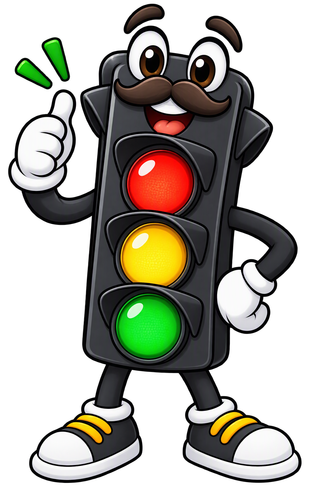

Atenção e sinalização
ZéMaforo
Ajuda a ler os sinais da via, antecipar situações e escolher o momento seguro para seguir ou parar.
“Observe a sinalização. A próxima decisão é sua.”
Jornada Educacional Adulto
Reforce sua atenção, respeite a sinalização e transforme responsabilidade em prática diária, seja ao dirigir, caminhar ou pedalar.

Dois pontos de vista, um objetivo
O Semáforo ajuda a interpretar a via. PareZinho lembra que uma pausa pode evitar riscos.
Ajuda a ler os sinais da via, antecipar situações e escolher o momento seguro para seguir ou parar.
“Observe a sinalização. A próxima decisão é sua.”

Reforça a importância de reduzir, respeitar a preferência e proteger pedestres e ciclistas.
“Na dúvida, reduza. Segurança vem antes da pressa.”
Desafio de trânsito
Responda uma pergunta por vez e confira a justificativa antes de avançar.